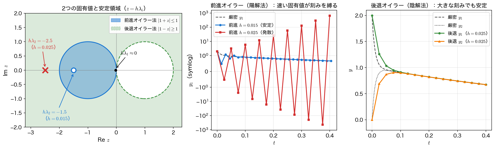

連立系の安定性と硬い問題
これまではスカラーのテスト方程式 \(y'=\lambda y\) で安定性を論じてきた。現実の問題は連立系 \(\mathbf{y}'=A\mathbf{y}\) であることが多い。本ページでは、連立系の安定性が各固有値のテスト方程式に帰着すること、そして固有値の大きさが極端に違う 硬い問題（stiff problem）で何が起こるかを見る。
連立系の対角化
定数係数の線形連立系
を考える。\(A\) が対角化可能で固有値 \(\lambda_1,\dots,\lambda_m\)、固有ベクトル行列 \(V\) をもつとき、\(A=V\Lambda V^{-1}\)（\(\Lambda=\mathrm{diag}(\lambda_i)\)）と書ける。変数変換 \(\mathbf{w}=V^{-1}\mathbf{y}\) を施すと、
つまり連立系は、各固有値ごとの独立なテスト方程式 \(w_i'=\lambda_i w_i\) に分解される。1段法の数値解も同じ変換で各成分が \(w_i^{(n+1)}=R(z_i)\,w_i^{(n)}\)（\(z_i=h\lambda_i\)）となるから、
連立系の絶対安定条件
連立系 \(\mathbf{y}'=A\mathbf{y}\) を1段法で安定に解くには、すべての 固有値について \(z_i=h\lambda_i\) が絶対安定領域に入っていなければならない。一つでも領域の外に出れば、その成分が発散して数値解全体を汚す。
硬さと剛比
例題3の硬い連立系を使う。
この \(A\) の固有値は \(\lambda_1=-1\) と \(\lambda_2=-100\) で、固有ベクトルはそれぞれ \((1,1)^\top,\ (1,-1)^\top\)。厳密解は
である。\(e^{-100t}\) の成分（速い成分）は \(t\approx0.05\) でほぼ消え、以降は \(e^{-t}\) の成分（遅い成分）だけがゆっくり減衰する。固有値の実部の大きさの比を 剛比（stiffness ratio）と呼ぶ。
剛比が大きいほど系は「硬い」。
硬さの本質——なぜ陽解法が縛られるのか
ここが硬い問題の核心である。前進オイラー法で安定に解くには、両方の \(z_i=h\lambda_i\) が安定領域 \(-2\le z_i\le0\) に入る必要がある。遅い成分（\(\lambda_1=-1\)）は \(h\le2\) で十分だが、速い成分（\(\lambda_2=-100\)）は
を要求する。問題は、速い成分が \(t\approx0.05\) で実質ゼロになった後も、この刻み制約が消えないことである。解の中身はもう遅い成分だけなのに、安定性のためだけに \(h\le0.02\) という細かい刻みを最後まで強いられる。これが硬さの本質であり、A安定な陰的解法（後退オイラー法・台形則）が必要になる理由である。陰的解法なら、速い成分の \(z\) も必ず安定領域（左半平面）に入るので、刻み幅は遅い成分の精度だけで選べる。

陰的解法を連立系に使う——第3回のガウス消去
連立系に後退オイラー法を適用すると、
すなわち毎ステップ、係数行列 \(I-hA\) をもつ連立1次方程式を解くことになる。これは第3回のガウス消去や補足（多変数ニュートン法）の線形ソルバそのものである。本ページのサンプルは \(2\times2\) だが、第3回のサンプルの部分ピボット選択つきガウス消去 gauss_solve に \(n=2\) を渡してそのまま使う。同じ関数が一般の \(m\times m\) にも使える。
非線形系の場合
右辺が非線形 \(\mathbf{y}'=\mathbf{f}(t,\mathbf{y})\) なら、後退オイラー法の式 \(\mathbf{y}_{n+1}-\mathbf{y}_n-h\mathbf{f}(t_{n+1},\mathbf{y}_{n+1})=\mathbf{0}\) を未知ベクトル \(\mathbf{y}_{n+1}\) についてニュートン法（補足の多変数ニュートン法）で解く。そのヤコビアンは \(I-h\,\partial\mathbf{f}/\partial\mathbf{y}\) であり、各反復でこの行列の連立系をガウス消去で解く。陰的解法・連立系ソルバ・ニュートン法が一つに結びつく。
他の手法の安定性（紹介）
本回は1段法の絶対安定領域・A安定・L安定を主役にしたが、多段法（第5回）にも安定性の理論がある。ここでは概念の紹介にとどめる。
- 多段法の絶対安定領域：アダムス・バッシュフォース法などの線形多段法にも絶対安定領域が定義できるが、同じ次数の RK 法に比べて狭い傾向がある。高次の陽的多段法ほど領域は小さくなりやすい。
- ゼロ安定性（zero-stability）と根条件（root condition）：多段法には絶対安定性とは別の安定性概念がある。\(h\to0\) の極限で、過去の数点に含まれる誤差が増幅せずに抑えられるか、という性質で、手法に付随する特性多項式の根がすべて単位円の内部か、円周上の単根であること（根条件）で判定する。1段法では自動的に満たされるが、多段法では成り立たない手法もある。
- ダールキストの同値定理（Dahlquist equivalence theorem）：線形多段法が 収束する ための必要十分条件は、一致性（consistency, 局所的に正しい）かつ ゼロ安定性 である、という基本定理。「いくら高次でもゼロ安定でなければ収束しない」ことを保証する。本講義ではこの定理の名前と主張の紹介までとし、証明・境界軌跡（boundary locus）による安定領域の作図・ダールキストの障壁定理は扱わない。
サンプルコード
硬い連立系を、前進オイラー法（\(h=0.025\) で発散・\(h=0.015\) で安定）と後退オイラー法（\(h=0.025\) でも各ステップ \(2\times2\) ガウス消去で安定）で解く。前進オイラー法の1ステップは第4回の調和振動子のプログラムの euler_step をそのまま使い、右辺 rhs だけを \(A\mathbf{y}\) に替える。後退オイラー法の1ステップは関数 backward_step に切り出す。連立1次方程式は上で述べたとおり gauss_solve で解くが、この関数は係数行列と右辺を書き換えるので、毎ステップ \(I-hA\) と \(\mathbf{y}_n\) の写しを作って渡す。ステップ数は絶対安定性のサンプルの steps で求める（\(h=0.015\) は \(T=0.4\) を割り切らず、\(N=27\) で \(t=0.405\) まで進む）。
#include <stdio.h>
#include <math.h>
/* 硬い線形連立系 y' = A y。
A = [[-50.5, 49.5],[49.5, -50.5]]、固有値 lambda1=-1, lambda2=-100（剛比 100）。
初期値 y0=(2,0) は両モードを含み、厳密解
y1(t) = e^{-t} + e^{-100t}, y2(t) = e^{-t} - e^{-100t}。
前進オイラー: y_{n+1} = (I + hA) y_n （速い固有値 -100 が h<2/100=0.02 を強いる）。
後退オイラー: (I - hA) y_{n+1} = y_n を毎ステップ 2x2 ガウス消去で解く。*/
/* 係数行列 A（行優先: 第 i 行第 j 列が A[i*2 + j]） */
static const double A[4] = {-50.5, 49.5, 49.5, -50.5};
/* y' = A y の右辺 */
void rhs(double t, const double s[2], double ds[2])
{
(void)t; /* この系は t に陽に依存しない */
ds[0] = A[0]*s[0] + A[1]*s[1];
ds[1] = A[2]*s[0] + A[3]*s[1];
}
void euler_step(double t, double s[2], double h)
{
double ds[2];
rhs(t, s, ds);
for (int i = 0; i < 2; i++) s[i] += h*ds[i];
}
/* 部分ピボット選択つきガウスの消去法で A x = b を解く（A と b は書き換わる） */
void gauss_solve(int n, double A[], double b[], double x[])
{
int i, j, k, p;
/* --- 前進消去（部分ピボット選択つき） --- */
for (k = 0; k < n; k++) {
/* 第 k 列で絶対値最大の行をピボットに選ぶ */
p = k;
for (i = k + 1; i < n; i++)
if (fabs(A[i*n + k]) > fabs(A[p*n + k])) p = i;
if (p != k) {
for (j = 0; j < n; j++) {
double t = A[k*n + j];
A[k*n + j] = A[p*n + j];
A[p*n + j] = t;
}
double t = b[k]; b[k] = b[p]; b[p] = t;
}
/* 第 k 行を使って下の行を消去する */
for (i = k + 1; i < n; i++) {
double m = A[i*n + k] / A[k*n + k];
for (j = k; j < n; j++) A[i*n + j] -= m * A[k*n + j];
b[i] -= m * b[k];
}
}
/* --- 後退代入 --- */
for (i = n - 1; i >= 0; i--) {
double s = b[i];
for (j = i + 1; j < n; j++) s -= A[i*n + j] * x[j];
x[i] = s / A[i*n + i];
}
}
/* y' = A y を後退オイラーで1ステップ進める: (I - hA) s_{n+1} = s_n を解く */
static void backward_step(double t, double s[2], double h)
{
(void)t; /* この系は t に陽に依存しない */
/* I - hA（行優先） */
double M[4] = {1.0 - h*A[0], -h*A[1],
-h*A[2], 1.0 - h*A[3]};
/* gauss_solve が書き換えるので写しを渡す */
double b[2] = {s[0], s[1]};
gauss_solve(2, M, b, s);
}
/* T を h で刻んだときのステップ数（T/h を四捨五入）。
h が T を割り切らないと、到達時刻 N*h は T からずれる */
static int steps(double T, double h) { return (int)(T / h + 0.5); }
int main(void)
{
double lam_fast = -100.0, lam_slow = -1.0;
double T = 0.4;
printf("固有値 lambda1=%.0f, lambda2=%.0f, 剛比 = %.0f\n",
lam_slow, lam_fast, fabs(lam_fast) / fabs(lam_slow));
printf("前進オイラー安定限界（速い固有値で決まる）: h < 2/%.0f = %.4f\n\n",
fabs(lam_fast), 2.0 / fabs(lam_fast));
/* 前進オイラー: h=0.025（h*lambda_fast=-2.5 不安定）と h=0.015（-1.5 安定）*/
double hs[] = {0.025, 0.015};
FILE *fp = fopen("systems_fe.dat", "w"); /* 作図用。1列目の h で2本を区別する */
if (fp == NULL) { perror("systems_fe.dat"); return 1; }
fprintf(fp, "# h t y1 y2 y1_exact y2_exact\n");
for (int k = 0; k < 2; k++) {
double h = hs[k];
int N = steps(T, h);
double y[2] = {2.0, 0.0};
printf("=== 前進オイラー h=%.3f (h*lambda_fast=%.2f) ===\n", h, h * lam_fast);
printf(" t y1数値 y2数値 y1厳密 y2厳密\n");
int step = (N / 8 > 0) ? (N / 8) : 1;
for (int n = 0; n <= N; n++) {
double t = n * h;
double e1 = exp(-t) + exp(-100.0 * t), e2 = exp(-t) - exp(-100.0 * t);
if (n % step == 0 || n == N)
printf("%5.3f %14.4e %14.4e %11.4e %11.4e\n", t, y[0], y[1], e1, e2);
fprintf(fp, "%.4f %.10e %.10e %.10e %.10e %.10e\n", h, t, y[0], y[1], e1, e2);
euler_step(t, y, h);
}
printf("\n");
}
fclose(fp);
/* 後退オイラー: (I-hA) y_{n+1} = y_n を毎ステップ ガウス消去。h=0.025 でも安定 */
{
double h = 0.025;
int N = steps(T, h);
double y[2] = {2.0, 0.0};
printf("=== 後退オイラー h=%.3f（毎ステップ 2x2 ガウス消去）===\n", h);
printf(" t y1数値 y2数値 y1厳密 y2厳密\n");
int step = (N / 8 > 0) ? (N / 8) : 1;
fp = fopen("systems_be.dat", "w");
if (fp == NULL) { perror("systems_be.dat"); return 1; }
fprintf(fp, "# t y1 y2 y1_exact y2_exact\n");
for (int n = 0; n <= N; n++) {
double t = n * h;
double e1 = exp(-t) + exp(-100.0 * t), e2 = exp(-t) - exp(-100.0 * t);
if (n % step == 0 || n == N)
printf("%5.3f %14.6e %14.6e %11.4e %11.4e\n", t, y[0], y[1], e1, e2);
fprintf(fp, "%.10e %.10e %.10e %.10e %.10e\n", t, y[0], y[1], e1, e2);
backward_step(t, y, h);
}
fclose(fp);
}
return 0;
}
コンパイルと実行：
実行結果
固有値 lambda1=-1, lambda2=-100, 剛比 = 100
前進オイラー安定限界（速い固有値で決まる）: h < 2/100 = 0.0200
=== 前進オイラー h=0.025 (h*lambda_fast=-2.50) ===
t y1数値 y2数値 y1厳密 y2厳密
0.000 2.0000e+00 0.0000e+00 2.0000e+00 0.0000e+00
0.050 3.2006e+00 -1.2994e+00 9.5797e-01 9.4449e-01
0.100 5.9662e+00 -4.1588e+00 9.0488e-01 9.0479e-01
0.150 1.2250e+01 -1.0532e+01 8.6071e-01 8.6071e-01
0.200 2.6446e+01 -2.4812e+01 8.1873e-01 8.1873e-01
0.250 5.8441e+01 -5.6889e+01 7.7880e-01 7.7880e-01
0.300 1.3048e+02 -1.2901e+02 7.4082e-01 7.4082e-01
0.350 2.9263e+02 -2.9123e+02 7.0469e-01 7.0469e-01
0.400 6.5751e+02 -6.5617e+02 6.7032e-01 6.7032e-01
=== 前進オイラー h=0.015 (h*lambda_fast=-1.50) ===
t y1数値 y2数値 y1厳密 y2厳密
0.000 2.0000e+00 0.0000e+00 2.0000e+00 0.0000e+00
0.045 8.3067e-01 1.0807e+00 9.6711e-01 9.4489e-01
0.090 9.2893e-01 8.9768e-01 9.1405e-01 9.1381e-01
0.135 8.7087e-01 8.7478e-01 8.7372e-01 8.7371e-01
0.180 8.3438e-01 8.3389e-01 8.3527e-01 8.3527e-01
0.225 7.9713e-01 7.9719e-01 7.9852e-01 7.9852e-01
0.270 7.6182e-01 7.6182e-01 7.6338e-01 7.6338e-01
0.315 7.2805e-01 7.2805e-01 7.2979e-01 7.2979e-01
0.360 6.9578e-01 6.9578e-01 6.9768e-01 6.9768e-01
0.405 6.6493e-01 6.6493e-01 6.6698e-01 6.6698e-01
=== 後退オイラー h=0.025（毎ステップ 2x2 ガウス消去）===
t y1数値 y2数値 y1厳密 y2厳密
0.000 2.000000e+00 0.000000e+00 2.0000e+00 0.0000e+00
0.050 1.033447e+00 8.701817e-01 9.5797e-01 9.4449e-01
0.100 9.126145e-01 8.992868e-01 9.0488e-01 9.0479e-01
0.150 8.628409e-01 8.617529e-01 8.6071e-01 8.6071e-01
0.200 8.207910e-01 8.207022e-01 8.1873e-01 8.1873e-01
0.250 7.812020e-01 7.811948e-01 7.7880e-01 7.7880e-01
0.300 7.435562e-01 7.435556e-01 7.4082e-01 7.4082e-01
0.350 7.077272e-01 7.077272e-01 7.0469e-01 7.0469e-01
0.400 6.736249e-01 6.736249e-01 6.7032e-01 6.7032e-01
前進オイラー法は \(h=0.025\)（速い固有値で \(h\lambda_2=-2.5<-2\)）だと数値解が振動しながら指数的に増大し、\(t=0.4\) で \(y_1\approx658\) まで暴走する。\(h=0.015\)（\(h\lambda_2=-1.5\)）に下げれば安定領域に入り厳密解に乗る。一方、後退オイラー法は \(h=0.025\) のままでも毎ステップ \(2\times2\) 系をガウス消去で解くことで安定で、終端 \(y_1=0.6736\) は厳密値 \(0.6703\) とよく一致する。速い成分が早々に消えても陽解法は刻みを縛られ続け、陰的解法はそれから解放される——硬い問題で A安定が必須である理由が、この数値で確かめられた。
可視化
systems.c は前進オイラー法の2本を systems_fe.dat（1列目が \(h\)、以下 \(t,\ y_1,\ y_2,\ y_1\) 厳密\(,\ y_2\) 厳密）に、後退オイラー法を systems_be.dat に書き出す。標準出力は8点おきの抜粋だが、ファイルには全ステップが入っているので、発散の立ち上がりまで追える。
import numpy as np
import matplotlib.pyplot as plt
fe = np.loadtxt("systems_fe.dat") # 列: h, t, y1, y2, y1_exact, y2_exact
be = np.loadtxt("systems_be.dat") # 列: t, y1, y2, y1_exact, y2_exact
fig, (ax1, ax2) = plt.subplots(1, 2, figsize=(11, 4.2))
for h in np.unique(fe[:, 0]):
d = fe[fe[:, 0] == h]
ax1.plot(d[:, 1], d[:, 2], "o-", ms=4, label=f"forward Euler $h={h:g}$")
fine = fe[fe[:, 0] == np.unique(fe[:, 0]).min()]
ax1.plot(fine[:, 1], fine[:, 4], "k--", lw=1.2, label="exact $y_1$")
ax1.set_yscale("symlog", linthresh=1.0) # 発散と厳密解を1枚に収める
ax1.set_xlabel("$t$")
ax1.set_ylabel("$y_1$")
ax1.set_title("explicit: fast eigenvalue limits $h$")
ax1.grid(alpha=0.3)
ax1.legend(loc="upper left", fontsize=9)
ax2.plot(be[:, 0], be[:, 1], "o-", ms=4, label="backward Euler $y_1$")
ax2.plot(be[:, 0], be[:, 2], "^-", ms=4, label="backward Euler $y_2$")
ax2.plot(be[:, 0], be[:, 3], "k--", lw=1.2, label="exact $y_1$")
ax2.plot(be[:, 0], be[:, 4], "k:", lw=1.2, label="exact $y_2$")
ax2.set_xlabel("$t$")
ax2.set_ylabel("$y$")
ax2.set_title("implicit: stable at the same $h = 0.025$")
ax2.grid(alpha=0.3)
ax2.legend(fontsize=9)
fig.tight_layout()
fig.savefig("stiff_system.png", dpi=150)
plt.show()
実行:
左の縦軸は symlog（\(|y_1|\le1\) は線形、その外は対数）にしてある。こうしないと \(h=0.025\) の発散（\(t=0.4\) で \(650\) 超）に潰されて、\(h=0.015\) の解と厳密解が同じ線に見えてしまう。右は同じ \(h=0.025\) の後退オイラー法で、\(t\approx0.05\) で速い成分が消えた後は \(y_1,y_2\) がともに \(e^{-t}\) に重なる。
まとめ
- 線形連立系 \(\mathbf{y}'=A\mathbf{y}\) は対角化で各固有値の独立なテスト方程式 \(w_i'=\lambda_i w_i\) に分解され、安定にはすべての \(z_i=h\lambda_i\) が安定領域に入る必要がある。
- 剛比 \(\max|\mathrm{Re}\,\lambda_i|/\min|\mathrm{Re}\,\lambda_i|\) が大きい 硬い問題 では、速い成分が消えた後も陽解法はその固有値の安定限界（例題では \(h\le0.02\)）に刻みを縛られる。A安定な陰的解法を使えば刻みは遅い成分の精度だけで選べる。
- 連立系の陰的解法は、毎ステップ \((I-hA)\mathbf{y}_{n+1}=\mathbf{y}_n\) という連立1次方程式を解くこと（第3回）。非線形ならニュートン法（補足の多変数ニュートン法）でヤコビアン \(I-h\,\partial\mathbf{f}/\partial\mathbf{y}\) の系を解く。
- 多段法にはゼロ安定性（根条件）という別の安定性概念があり、ダールキストの同値定理「一致性＋ゼロ安定性 ⇔ 収束」が収束を保証する。
- 仕上げに 演習問題 で、虚軸上の安定性（振動のエネルギー）・RK4 の安定限界・硬い連立系での L安定性と次数の兼ね合いを自分の手で確かめる。